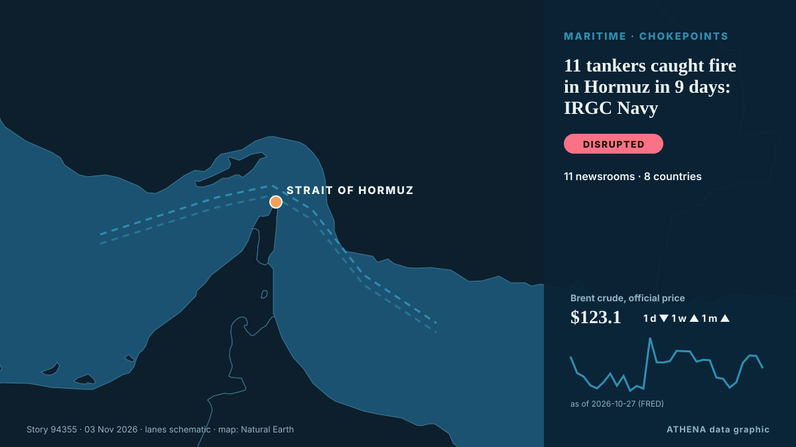

Schifffahrt und Häfen
GesponsertPräsentiert von  Cybernetics and Artificial Intelligence Lab Welcome to the Cybernetics and Artificial Intelligence Laboratory, established at the Department of Business Administration of the National and Kapodistrian University of Athens. The lab is headed by Professor Dimitrios Thomakos. The lab aims to do research that can be published in top venues. Our research uses tools and methods of Artificial Intelligence, and lies in the following areas: - Forecasting - Decision making - Cyber security - Finance We are always looking forward to collaborating with exceptional students!
Cybernetics and Artificial Intelligence Lab Welcome to the Cybernetics and Artificial Intelligence Laboratory, established at the Department of Business Administration of the National and Kapodistrian University of Athens. The lab is headed by Professor Dimitrios Thomakos. The lab aims to do research that can be published in top venues. Our research uses tools and methods of Artificial Intelligence, and lies in the following areas: - Forecasting - Decision making - Cyber security - Finance We are always looking forward to collaborating with exceptional students!
| 21. Okt. | 0 |
|---|---|
| 22. Okt. | 0 |
| 23. Okt. | 1 |
| 24. Okt. | 0 |
| 25. Okt. | 0 |
| 26. Okt. | 2 |
| 27. Okt. | 0 |
| 28. Okt. | 3 |
| 29. Okt. | 2 |
| 30. Okt. | 3 |
| 31. Okt. | 4 |
| 1. Nov. | 4 |
| 2. Nov. | 4 |
| 3. Nov. | 0 |
Schlagzeilen werden auf Englisch angezeigt, wie veröffentlicht.

11 tankers caught fire in Hormuz in 9 days: IRGC Navy
"One of the vessels is a supertanker; it is currently engulfed in flames following a powerful explosion," the Iranian Revolutionary Guard Corps (IRGC) Navy spokesperson said. von The Jerusalem Post
Forbes highlights Nador West Med's $5.5 billion investment and energy ambitions
Morocco’s Nador West Med port complex has attracted 54 billion dirhams ($5.5 billion) in public and private investment, strengthening the country’s ambitions to become a major maritime, industrial… von Hespress English
Vessel struck by unknown projectile off Oman: UK maritime agency
Projectile leaves hole in vessel's starboard side near Lima, with crew reported safe, says UKMTO. von Anadolu Agency (English)
DP World strengthens China–Africa corridor with new shipping link
DP World’s Shipping Solutions AMEA business will be launching a new weekly service called the China Africa Link towards the end of this month which it says will ‘strengthen maritime connectivity… von Ship.Energy
Vessel Struck in Strait of Hormuz
Data and insights tracking transit activity, oil prices, petroleum reserves, supply chain impacts and geopolitical developments affecting the waterway. von IndustryWeek
Tanzanian-flagged merchant vessel sunk off the coast of Cyprus
MSC Hannah III rescued all 10 crew members from the Tanzanian-flagged commercial vessel AS Dream after it began sinking west of Cyprus. von Container News
Iran's IRGC Navy says two oil tankers exploded after hitting mines in Hormuz
Coalition says it destroyed two ballistic missile launchers The Coalition has released footage it says shows the targeting and destruction of two ballistic missile launch platforms. von Gulf News
Cosco Shipping Ports sees steady volume growth in Q3
The Chinese port operator has maintained revenue growth amid global trade disruption. von Seatrade Maritime
Hormuz shipping still faces major risks
The Strait of Hormuz remains dangerous and costly for shipping, despite US claims that it is open. von Al Jazeera English
SFL Newbuild agreements and long-term charters of two 8,800 TEU container vessels and one very large ammonia carrier
SFL Corporation announced that it has agreed to acquire two 8,800 TEU Container Vessels with scheduled delivery in 2027 and. von Cyprus Shipping News
Tanger Med 3 terminal due to start operations in mid-2031
Tanger Med, Morocco (Ports Europe) November 2, 2026 – The Tanger Med 3 container terminal is due to start operations in mid-2031, Tanger Med chief executive Mehdi Tazi-Riffi said. von Ports Europe
Tanker struck by projectile in Strait of Hormuz
KUWAIT CITY, Oct 23: A tanker reported being struck by an unknown projectile while sailing outbound through the Strait of Hormuz, about seven nautical miles northeast of Limah, Oma... von Arab Times
Panama Canal Strengthens Long-Term Vision Following 41st Advisory Board Meeting
The Panama Canal Boards of Directors and Advisors concluded their 41st meeting today, following three days of discussions focused on evaluating opportunities for the waterway’s growth in a rapidly… von Panama Canal Authority
Taiwan says China harassing shipping with east coast patrol
TAIPEI, Nov 1 (Reuters) – China’s Coast Guard is harassing shipping with its latest patrol off Taiwan’s east coast and trying to exert a fictional jurisdiction, the Taiwanese Coast Guard said, adding… von gCaptain
Iran submits evidence of US-Israeli attacks on ports, maritime infrastructure to IMO
London, IRNA — Iran has submitted documents and photographic evidence of US and Israeli attacks on the country’s ports, civilian vessels, and maritime infrastructure to the International Maritime… von IRNA (English)
Natalia Margioli Breaks a 115-Year Barrier at Shipbrokers’ Institute
Natalia Margioli has become the first woman and first Greek to serve as president of the Institute of Chartered Shipbrokers in 115 years. von Greek City Times
Iran Guards Say Halted 3 Tankers After 'Incidents' In Strait Of Hormuz
The Iran Guards did not specify the nature of the incidents, which came a day after Iran's armed forces said at least four tankers had stopped in the area after hitting mines. von NDTV
Iran Says Four Tankers Hit Mines in Hormuz as US Insists Shipping Lanes Are Clear
Iran says four oil tankers caught fire after striking mines in the Strait of Hormuz, a claim that directly challenges US assurances that the main shipping lanes through the waterway have been cleared. von Greek City Times
Tanker carrying 27 Indians struck by limpet mines in Strait of Hormuz; minister says all seafarers safe
The incident took place on Thursday, 25 nautical miles (46 km) northeast of Oman's Khasab, British navy agency United Kingdom Maritime Trade Operations said. von Hindustan Times